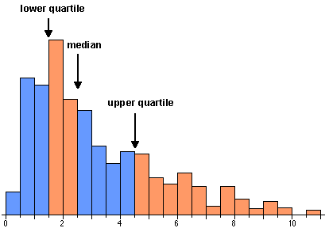
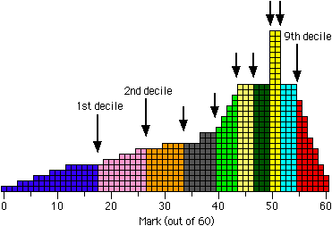

Describing other locations in a distribution
The mean and median both describe the 'centre' of a distribution. This is usually what you want to summarise about a set of marks, but occasionally a different part of the distribution is of more interest.
For example, you might want to describe a typical mark for a 'good' or 'weak' student.
Quartiles
The median of a distribution splits the data into two equally-sized groups. In the same way, the quartiles are the three values that split a data set into four equal parts. Note that the 'middle' quartile is the median.
The upper quartile describes a 'typical' mark for the top half of a class and the lower quartile is a 'typical' mark for the bottom half of the class.
The quartiles are closely related to the histogram of a data set. Since area equals the proportion of values in a histogram, the quartiles split the histogram into four approximately equal areas.
(The relationship is only approximate if the quartiles do not coincide with histogram bin boundaries.)

Deciles
In a similar way, the deciles of a distribution are the nine values that split the data set into ten equal parts.
You should not try to calculate deciles from small data sets — a single class of marks is too small to get useful values since the extreme deciles are very variable. However the deciles can be useful descriptions for larger data sets such as national distributions for marks from standard tests.
The diagram below shows a jittered dot plot of 60 marks from an exam.
Click on the areas between the quartiles and verify that the quartiles split the students into four groups of 15.
Use the pop-up menu to display deciles for the data, and verify that the 9 deciles split the students into 10 groups, each containing 6 students.
Deciles for the distribution and for individual students
The term 'decile' is used in two different contexts. It is confusing that the same word is used in both ways, so be careful!
When applied to a distribution (a large group of marks), there are nine deciles, each of which is a mark.
A student whose mark is below the first decile is said to be in decile 1. Similarly, a student whose marks is between the first and second deciles is in decile 2, ... and a student whose marks is above the ninth decile is in decile 10. When applied to individual students, the term 'decile' is therefore a number between 1 and 10.
For example, the histogram below shows the distribution of marks in a test (out of 60) that was attempted by 600 students. Each student's mark is represented by a square in the histogram.

The nine deciles split the students into 10 groups of 60.
The first decile is 17.5 so the weakest tenth of the students in the class had a mark below this. This decile therefore summarises the performance of the weakest students.
Students with marks below 17.5 are said to be in decile 1. Those with marks between 17.5 and 26.5 are in decile 2, and so on, up to students with marks higher than 54.5 who are in decile 10.
Details
Unfortunately there is no commonly accepted precise definition for the lower and upper quartiles — different software (and indeed different statisticians!) use slightly different values. One simple definition is that the lower quartile is the median of the lower half of the data (excluding the middle value if there is an even number of values) with a similar definition for the upper quartile.
In practice, the precise definition is of little practical importance, especially for large data sets. The main thing to remember is to be consistent with your definition if you are comparing several data sets.
There are similar problems with precisely defining deciles but again the precise definition used should not affect your interpretation of the data.
In practice, you are advised to use the functions built into Excel to evaluate quartiles and deciles.
Percentiles
In a similar way, the percentiles of a distribution are the 99 values that split the data set into a hundred equal parts. These percentiles can be used to categorise the individuals into percentile 1, ..., percentile 100.
A very large data set is required before the extreme percentiles can be estimated with any accuracy. (The 'random' variability in marks is especially noticeable in the extremes of a data set.)
Quartiles, etc. in Excel
Excel has a built-in function to evaluate the quartiles of a column of marks. If the marks are contained in the cells A1 to A25 of a spreadsheet, the formula "=QUARTILE(A1:A25, 1)" will calculate the lower quartile of the distribution of marks. If the second parameter to the function is 2 or 3, the median or upper quartile will be shown.
In a similar way, the function "=PERCENTILE(A1:A25, 5)" will evaluate the 5th percentile of the distribution, etc.